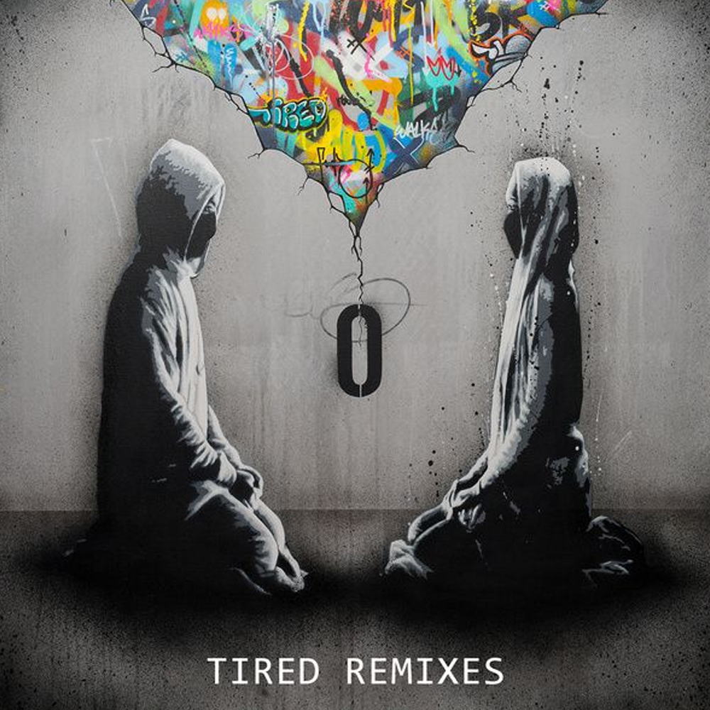
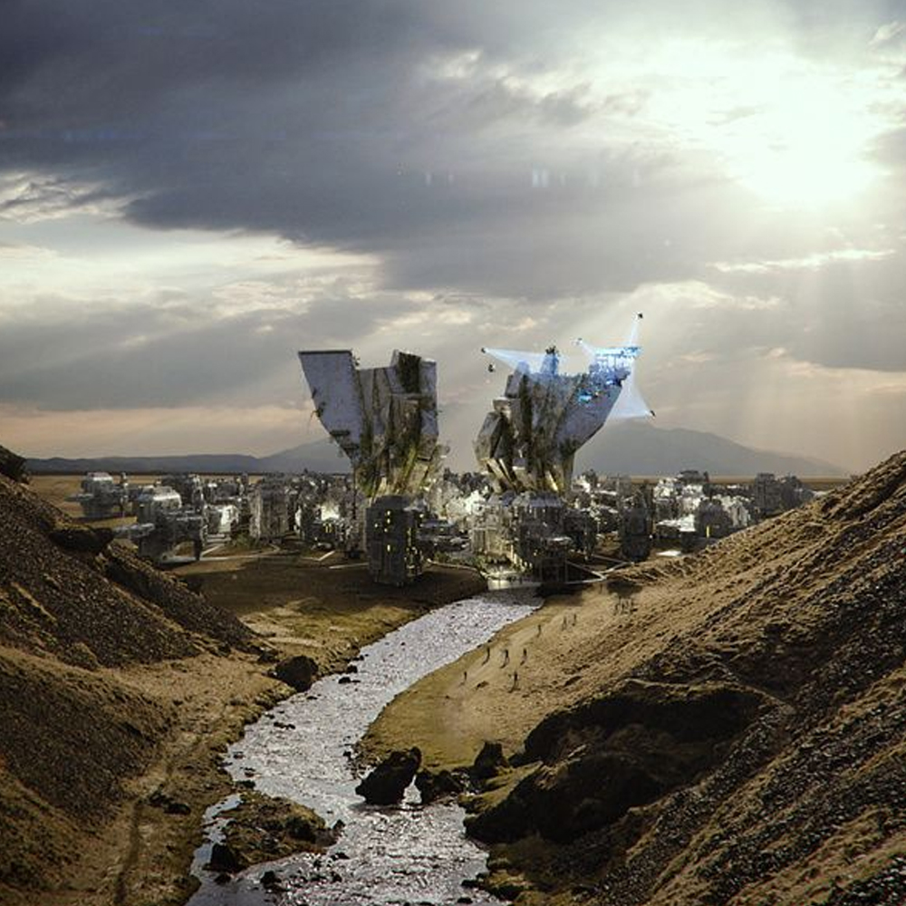
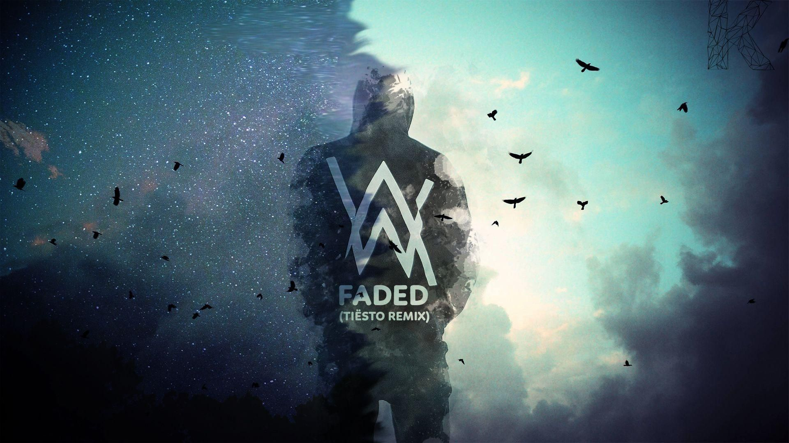

Accordion
AlanWalker
Alan Walker
앨런워커는 테크노 음악으로 시작하여, 2013년부터 다른 여러 프로듀서들과 콜라보레이션 활동 및 사운드클라우드 활동을 했다. 2013년 6월 부턴 AlanWalker라는 예명으로 활동중이다.
Album Story
 
DARKSIDE (feat. Au/Ra and Tomine Harket)
앨런워커의 또다른 세계관과 이어지는 스토리로, 이전 'All Falls Down'에 이어 드론을 통해 앨런워커의 흔적을 찾는다.

STAGE
Choose Walker's Stage Performance!
MUSIC VIDEO
Want More Video? Enter AlanWalker's youtube
AlanWalker's Tube